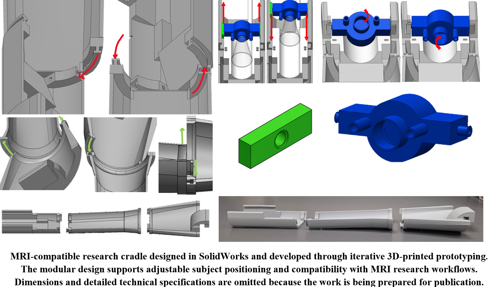

MRI-Compatible Ferret Cradle
A custom 3D-printed positioning system developed for ferret brain MRI, where mechanical geometry, coil compatibility, anesthesia delivery, animal handling, and repeatable imaging all had to work as one system.
The cradle taught me that a successful design is defined by its environment. A mechanically sound part can still fail if it interferes with imaging, positioning, workflow, safety, or repeatability.
The need
Ferret brain imaging required a species-specific positioning solution that could accommodate large body-size differences while fitting existing scanner and coil geometry. Veterinary and imaging personnel also needed access for anesthesia tubing, monitoring, blankets, and routine setup.
My role
I translated user feedback and experimental constraints into SolidWorks designs, developed modular attachment and adjustment features, built 3D-printed iterations, and participated in phantom and in-vivo validation in the 7T MRI environment.
Design under constraints
The project required balancing animal size, head positioning, coil clearance, MRI-compatible material selection, anesthesia integration, service access, assembly, and repeatable placement. The design process was iterative because each change could affect several interfaces at once.
Validation and outcome
The cradle was evaluated for fit, field-of-view coverage, workflow usability, and repeatable operation. Public conference work from the project reports comparable coverage across male and female skull phantoms and successful integration with commercial coil hardware.
Images

What changed in how I engineer
This project made the design-build-test cycle central to my process. I became more deliberate about designing around real interfaces, asking end users for feedback early, and treating validation as part of design rather than a final check.